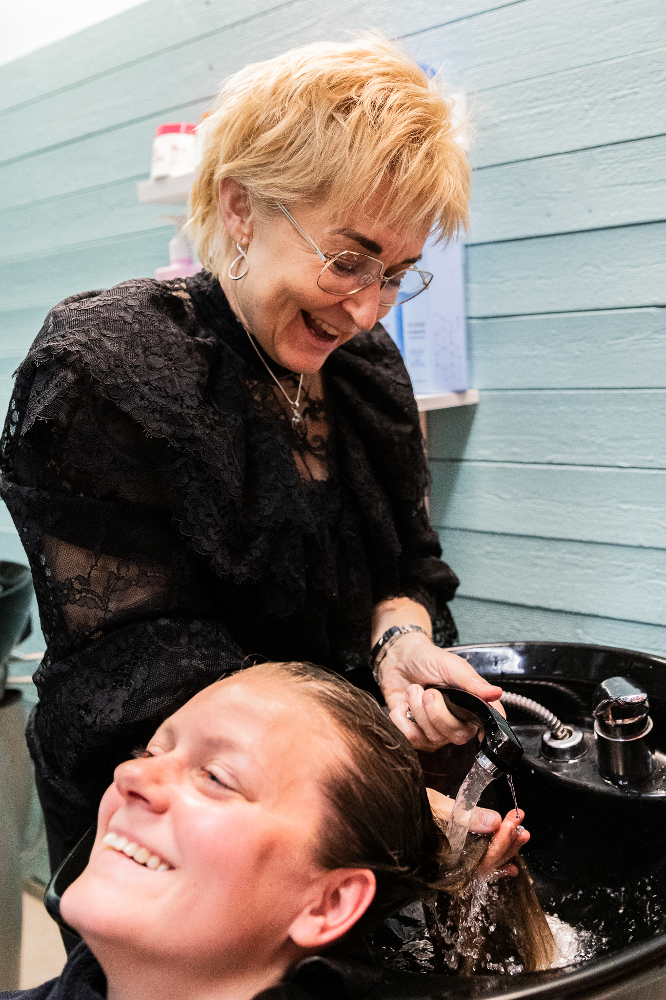

Trettio år i branschen, tjugo som salongsledare. Jag driver fortfarande en säsongssalong varje sommar och står själv på golvet.
Jag startade eget 2005 och byggde tre salonger. Under samma period fick jag två barn, köpte hus och utbildade mig till coach i England.
Jag är för bra på att jobba hårt. Det är därför jag känner igen mönstret hos varje salongsägare jag möter, och det är därför den här sajten finns.
Salongsägare med fyra anställda eller fler, som vill gå från tjat och brandsläckning till ett team som tar egna initiativ. Det handlar om tid, tydlighet och lönsamhet.
Arbetet bygger på tre delar som hänger ihop. Tydliggöra vad som gäller, följa upp att det händer, och ge feedback så att det upprepas. Det är ett hantverk, precis som klippning, och det går att lära sig.

Siffrorna kommer ur salongernas egna uppföljningar och finns i sin helhet under kundcase.
maria@abergco.se
Nästan alla klarar den första veckan. Det som brukar fattas är någon som frågar hur det gick i månad tre.
Så arbetar jag